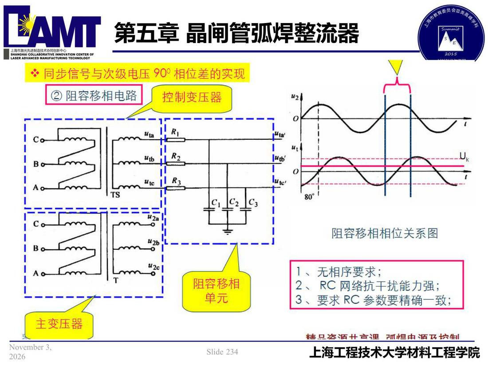

05 第5章 晶闸管弧焊整流器/p234 同步信号与次级电压 90°相位差实现
p234 同步信号与次级电压 90°相位差实现
📄 原文：📄 弧焊电源 课件（PDF 第 234 页）（幻灯片 234/273；PDF 第 234 页）
同步信号与次级电压 90°相位差实现

讲义原文
本页在课件中是纯图文版式（无文字层），内容以页图与下面的 OCR 文本为准。
页面文字（OCR 机读，可能有错字，以页图为准）
同步信号与次级电压 90°相位差实现 ② 阻容移相电路 控制变压器 阻容移相相位关系图 阻容移相 单元 1、无相序要求； 2、RC 网络抗干扰能力强； 3、要求 RC 参数要精确一致； 主变压器 烤旦恣酒卄育理 M担中酒飞坎生